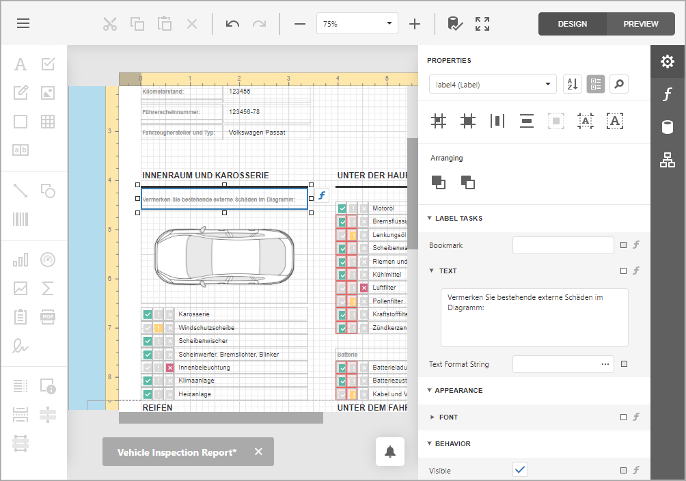

Localize Reports
The Report Designer enables you to localize a report for different languages and cultures and save localized values to the report file.
Use Properties Panel
Perform the following actions to localize a report:
Specify a report language other than Default:

The Language drop-down list contains all available locales. The report's languages are highlighted in bold.
Change the controls' property values. You can move and resize a control.

Save the report.
When you load a localized report, use the Language drop-down list to switch to the localized version.
Use Localization Editor
The Localization Editor allows you to change text strings in the report and expedite the translation process.